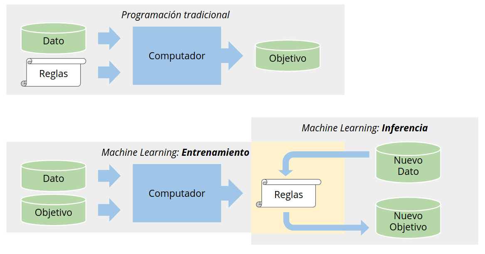
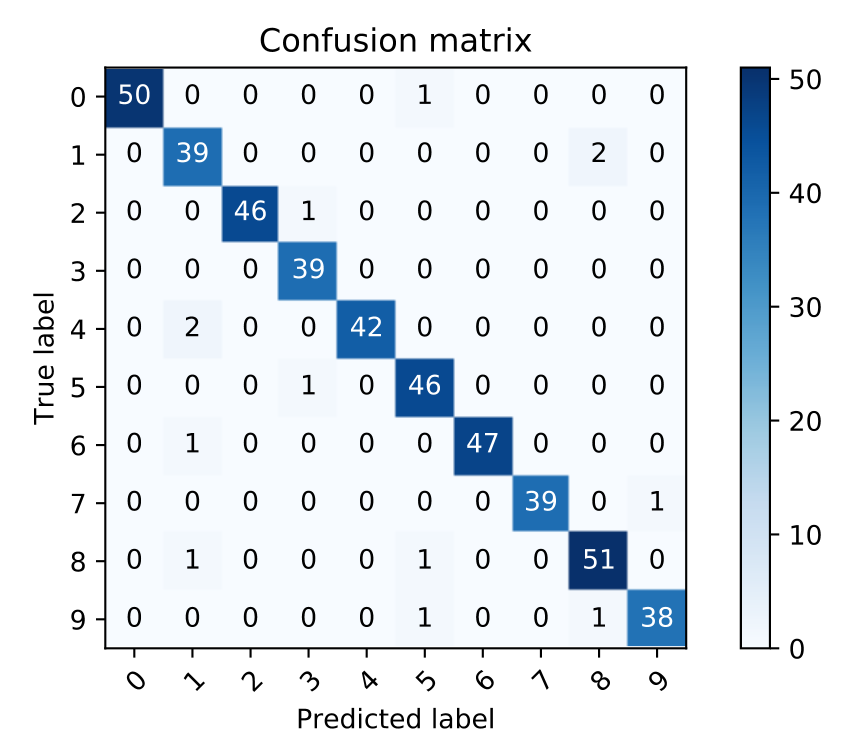

%matplotlib inline
import numpy as np
import matplotlib.pyplot as plt
from functools import partial
2. Aprendizaje supervisado: Clasificación¶
2.1. Descripción conceptual¶
En el paradigma de aprendizaje supervisado los datos de entrenamiento tienen asociado un objetivo
El objetivo corresponde usualmente a una etiqueta numérica que un ser humano le asigna al dato. Este conocimiento a priori es lo que el algoritmo debe encapsular
Durante el entrenamiento la máquina recibe como entrada datos y etiquetas con tal de aprender reglas que los relacionen
Durante la inferencia la máquina usa las reglas para predecir la etiqueta en datos no vistos previamente
Podemos comparar el paradigma de aprendizaje supervisado con el de programación tradicional en base a la siguiente figura
{kind=link}
2.2. Descripción matemática¶
Formalmente, lo que se busca es aprender un mapeo o función paramétrica
donde \(\mathcal{X}\) es el dominio de los datos e \(\mathcal{Y}\) es el dominio del objetivo
Típicamente el modelo se entrena en base a un conjunto de \(N\) ejemplos:
donde cada ejemplo es una tupla formada de datos (entrada) \(x_i \in \mathcal{X}\) y objetivo (salida) \(y_i \in \mathcal{Y}\)
Datos: La naturaleza de los datos depende del problema, sin embargo lo más común es que los datos \(x_i\) se estructuren como arreglos de \(M\) componentes. A los componentes los llamamos atributos o características (features)
Objetivos: El objetivo es la variable que deseamos predecir. Si el objetivo es una variable numérica (continua o discreta) estamos ante un problema de regresión. Por el contrario si el objetivo es categórico entonces estamos ante un problema de clasificación.
En esta lección nos concentraremos en el problema de clasificación y revisaremos algunos modelos clásicos
En el modelo abstracto \(f_{\theta}\) el vector \(\theta\) corresponde a los parámetros del modelo. Luego aprender/entrenar/ajustar el modelo corresponde a encontrar el valor “óptimo” de \(\theta\)
Para encontrar este valor óptimo debemos ser capaces de medir el desempeño del modelo. Esto se hace a través de una función de pérdida o costo: \(L(\theta)\). Usualmente esta función está relacionada al error de nuestro modelo en nuestro problema particular. En la unidad anterior utilizamos la verosimilitud como función de costo para problemas de regresión.
Recordar que cuando hablamos de \(\theta\) “óptimo” lo decimos en el sentido de una función de costo particular
La siguiente figura (referencia) muestra un modelo de regresión lineal que se ajusta a un conjunto de datos (derecha) y la función de costo que está minimizando (izquierda)

2.3. Clasificador Bayesiano “Ingenuo”¶
Este clasificador con interpretación probabilística busca la probabilidad de la etiqueta \(y\) dado el ejemplo \(x\), es decir \(P(y|x)\)
Usando el teorema de Bayes podemos escribir esto como
donde
\(p(y)\) es la probabilidad a priori, corresponde a lo que sabemos antes de observar el ejemplo
\(p(y|x)\) es la probabilidad a posteriori, corresponde a lo que sabemos luego de observar el ejemplo \(x\)
\(p(x|y)\) es la verosimilitud de observar un ejemplo con atributos \(x\) suponiendo que la etiqueta es \(y\)
Si tenemos un problema de clasificación binario, es decir con dos etiquetas, podemos escribir
Si el cociente anterior es mayor que \(1\) entonces la clase de \(x\) es \(1\), de lo contrario es \(0\). Si tenemos un problema de clasificación con \(C\) clases entonces decidimos la clase con
En ambos casos el denominador del teorema de Bayes no se ocupa, pues es idéntico para todo \(y\). Por otro lado el prior generalmente se estima empíricamente a partir de nuestra base de datos de entrenamiento como
En términos prácticos la principal ventaja de este clasificador es que es simple, fácil de entrenar y muy difícil de sobreajustar. Su desventaja es que hace supuestos muy fuertes sobre los datos. Si no se cumplen el desempeño no será bueno. A continuación revisaremos en detalle estos supuestos.
2.3.1. Supuestos del clasificador bayesiano “ingenuo”¶
Digamos que \(x\) es un vector que representa \(D\) atributos. El primer supuesto de este modelo es que los atributos usados en el clasificador son independientes. Por lo tanto la verosimilitud se puede escribir como
En segundo lugar se debe suponer una distribución para los atributos. Por ejemplo si asumimos una distribución Gaussiana
se tiene un clasificador bayesiano ingenuo con verosimilitud Gaussiana
Se pueden suponer otras distribuciones dependiendo de los datos
La distribución Gaussiana es típicamente usada para atributos continuos
Para atributos discretos se puede usar la distribución multinomial
2.3.2. Ejemplo: Clasificación de biopsias con modelo implementado desde cero¶
En este ejemplo implementaremos un clasificador bayesiano ingenuo con verosimilitud gaussiana desde cero y lo entrenaremos usando el dataset de [cancer de mama de la Universidad de Wisconsin](https://archive.ics.uci.edu/ml/datasets/Breast+Cancer+Wisconsin+(Diagnostic).
Para este ejemplo usaremos dos atributos por paciente
x: radio de la muestra (continua)
z: textura de la muestra (continua)
Adicionalmente la variable \(y\) se refiere a la etiqueta de la muestra. El dataset tiene 569 pacientes, 212 con tumores malignos (1) y 357 tumores benignos (0)
Importemos los datos y analicemos un gráfico de dispersión de los atributos. Reflexione ¿Son los datos separables?
import pandas as pd
df = pd.read_csv('../data/cancer.csv', index_col=0)
x, y = df.drop(columns="diagnosis").values, df["diagnosis"].replace({'M':1, 'B':0}). values
fig, ax = plt.subplots(figsize=(7, 4), tight_layout=True)
for k, (label, marker) in enumerate(zip(['Benigno', 'Maligno'], ['o', 'x'])):
ax.scatter(x[y==k, 0], x[y==k, 1], s=20, marker=marker, label=label, alpha=0.5)
ax.set_xlabel('Radio de la muestra')
ax.set_ylabel('Textura de la muestra')
plt.legend();
Al ser un problema de clasificación binaria podemos escribir
En primer lugar estiamos los priors en base a la frecuencia de casos benignos y malignos en el dataset, es decir
y
import scipy.stats
# Probabilidades a priori
from collections import Counter
print(Counter(y))
py = [Counter(y)[i]/len(y) for i in range(2)]
Counter({0: 357, 1: 212})
Ahora sólo falta encontrar los parámetros \(\mu_x, \sigma_x, \mu_z, \sigma_z\). Los podemos encontrar aplicando el criterio de máxima verosimilitud sobre una distribución normal univariada mediante scipy.stats.norm.fit
El siguiente gráfico de contornos muestra el resultado del ajuste para las distribuciones de los pacientes sanos y con cancer
# Ajuste de verosimilitudes
dists = {}
for y_ in [0, 1]: # Para cada clase
for d in [0, 1]: # para cada característica
params = scipy.stats.norm.fit(x[y==y_, d])
dists[(y_, d)] = scipy.stats.norm(loc=params[-2], scale=params[-1])
def verosimilitud_y_cociente(x, z):
pxzy0 = dists[(0, 0)].pdf(x)*dists[(0, 1)].pdf(z)
pxzy1 = dists[(1, 0)].pdf(x)*dists[(1, 1)].pdf(z)
return pxzy0, pxzy1, (pxzy1*py[1])/(pxzy0*py[0] + 1e-8)
fig, ax = plt.subplots(figsize=(7, 4), tight_layout=True)
for k, (label, marker) in enumerate(zip(['Benigno', 'Maligno'], ['o', 'x'])):
ax.scatter(x[y==k, 0], x[y==k, 1], c='k', s=20,
marker=marker, label=label, alpha=0.5)
x_plot = np.linspace(np.amin(x[:, 0]), np.amax(x[:, 0]), num=500)
z_plot = np.linspace(np.amin(x[:, 1]), np.amax(x[:, 1]), num=500)
X, Z = np.meshgrid(x_plot, z_plot)
Y = verosimilitud_y_cociente(X, Z)
ax.contour(X, Z, Y[0], zorder=-1, cmap=plt.cm.Reds, levels=20)
ax.contour(X, Z, Y[1], zorder=-1, cmap=plt.cm.Blues, levels=20)
ax.set_xlim([np.amin(x_plot), np.amax(x_plot)])
ax.set_ylim([np.amin(z_plot), np.amax(z_plot)])
ax.set_xlabel('Radio de la muestra (x)')
ax.set_ylabel('Textura de la muestra (z)')
plt.legend();

El último paso consiste en decidir entre benigno y maligno usando el cociente entre los posterior
En el caso binario es típico usar una regla como la siguiente
donde \(R\) es un “umbral de clasificación”. El siguiente gráfico muestra las fronteras de decisión usando cuatro umbrales distintos
fig, ax = plt.subplots(figsize=(7, 4), tight_layout=True)
for k, (label, marker) in enumerate(zip(['Benigno', 'Maligno'], ['o', 'x'])):
ax.scatter(x[y==k, 0], x[y==k, 1], c='k', s=20,
marker=marker, label=label, alpha=0.5)
cp = ax.contour(X, Z, Y[2] , levels=[0.1, 0.5, 1., 1.5], cmap=plt.cm.tab10);
ax.clabel(cp, fontsize=15, fmt='%0.1f', manual=[(9.0, 35), (9.0, 30), (9.0, 22), (12.5, 35)]);
Podemos “ajustar” el riesgo \(R\) para controlar el compromiso (trade-off) entre los siguientes tipos de errores
Falso positivo: Predecir que el paciente está enfermo \(\hat y=1\) cuando en realidad estaba sano \(y=0\)
Falso negativo: Predecir que el paciente está sano \(\hat y=0\) cuando en realidad estaba enfermo \(y=1\)
Reflexione: En un problema de índole médico como el que acabamos de revisar ¿Cuáles son las repercusiones de cada uno de estos errores? ¿Cuál es más grave?
2.4. La librería scikit-learn¶
La librería de Python scikit-learn tiene una amplia selección de
clasificadores y regresores
utilitarios para preprocesar y particionar los datos
métricas y gráficas de evaluación
entre otros. Puedes instalarla en tu ambiente conda con
conda install scikit-learn
A continuación utilizaremos el módulo sklearn.naive_bayes que implementa distintos clasificadores bayesianos ingenuos, entre ellos
Clasificador con verosimilitud Gaussiana:
GaussianNBClasificador con verosimilitud Multinomial:
MultinomialNB
Por ejemplo el constructor de GaussianNB es
sklearn.naive_bayes.GaussianNB(priors=None, # Un ndarray con las probabilidades a priori
...
)
y los métodos más importantes de este modelo (y otros de scikit-learn) son
from sklearn.naive_bayes import GaussianNB
clf = GaussianNB()
clf.fit(xe, ye) # Ajusta un modelo a los datos y etiquetas
pyv = clf.predict_proba(xv) # Retorna la probabilidad de cada clase
yv = clf.predict(xv) # Retorna la clase predicha (la de máxima probabilidad)
clf.score(xv, yv) # Retorna la precisión (accuracy) promedio del modelo
Usemos lo aprendido para entrenar el clasificador bayesiano en los datos del ejemplo anterior
from sklearn.naive_bayes import GaussianNB
clf = GaussianNB(priors=py) #Usamos los priors calculados antes
clf.fit(x[:, :2], y) # Entrenamos
GaussianNB(priors=[0.6274165202108963, 0.37258347978910367])
Podemos uar el método predict_proba para visualizar la frontera de decisión
fig, ax = plt.subplots(figsize=(7, 4), tight_layout=True)
for k, (label, marker) in enumerate(zip(['Sanos', 'Cancer'], ['o', 'x'])):
ax.scatter(x[y==k, 0], x[y==k, 1], c='k', s=20,
marker=marker, label=label, alpha=0.5)
Y = clf.predict_proba(np.stack((X.ravel(), Z.ravel())).T)[:, 1]
#Y = clf.predict(np.stack((X.ravel(), Z.ravel())).T)
cf = ax.contourf(X, Z, np.reshape(Y, X.shape), zorder=-1, cmap=plt.cm.RdBu, vmin=0, vmax=1, levels=20, alpha=0.75)
ax.set_xlim([np.amin(x_plot), np.amax(x_plot)])
ax.set_ylim([np.amin(z_plot), np.amax(z_plot)])
ax.set_xlabel('Radio de la muestra (x)')
ax.set_ylabel('Textura de la muestra (z)')
plt.colorbar(cf)
plt.legend();
2.5. Evaluando un clasificador¶
A continuación veremos como evaluar de manera cuantitativa el desempeño de un modelo clasificador.
2.5.1. Matriz o tabla de confusión¶
Una matriz o tabla de confusión se construye contando los casos que tienen etiqueta real igual a \(i\) y etiqueta predicha igual a \(j\) para \(i \wedge j=1,2,\ldots,C\) donde \(C\) es el número de clases
La siguiente imagen muestra una matriz de confusión para un problema de \(10\) clases
{kind=link}
En una matriz de confusión general
los elementos de la diagonal representan las clasificaciones correctas
los elementos fuera de la diagonal representan las clasificaciones erroneas
las filas corresponden a las clases reales
las columnas corresponden a las clases predichas por el clasificador
Ejemplo: En la imagen anterior tenemos \(2\) ejemplos de clase “4” que fueron clasificados como clase “1” por el modelo
En scikit-learn podemos calcular la matriz de confusión usando el módulo sklearn.metrics
Notar que la matriz de confusión requiere una etiqueta categórica, es decir no acepta probabilidades. Podemos convertir probabilidades en etiquetas categóricas usando np.argmax(probs, axis=1). También podemos usar el método predict para obtener la predicción categórica directamente.
from sklearn.metrics import confusion_matrix
yhat = clf.predict(x[:, :2])
cm = confusion_matrix(y, # Etiqueta real
yhat # Etiqueta predicha
)
print(cm)
[[340 17]
[ 48 164]]
También podemos usar plot_confusion_matrix si deseamos producir una matriz de confusión como una figura de matplotlib
from sklearn.metrics import plot_confusion_matrix
fig, ax = plt.subplots(figsize=(5, 4), tight_layout=True)
plot_confusion_matrix(clf, # Clasificador
x[:, :2], # Datos
y, # Etiquetas
ax=ax, # subeje para gráficar
display_labels=np.array(['Benigno', 'Maligno']), #Nombres de las clases
cmap=plt.cm.Blues, # Escala de colores
normalize=None #Permite escoger entre cantidades y porcentajes
);
Intepretación:
Hay 17 casos predichos como maligno que en realidad eran benignos: Falso positivo
Hay 48 casos predichos como benignos que en realidad eran malignos: Falso negativo
2.5.2. Métricas globales: Accuracy o exactitud¶
El accuracy es una métrica de resumen que es útil para hacer una idea global de como funciona el clasificador. Es importante notar que el accuracy no reemplaza la tabla de confusión si no que se calcula a partir de la misma
El accuracy se calcula como la cantidad de ejemplos predichos correctamente dividido por la cantidad total de ejemplos y es un valor en el rango \([0, 1]\). Por definición corresponde a la suma de la diagonal de la matriz de confusión dividido por el total de ejemplos
Podemos calcular el accuracy de nuestro modelo con scikit-learn usando la función accuracy_score o el atributo score del modelo (si está disponible)
from sklearn.metrics import accuracy_score
yhat = clf.predict(x[:, :2])
print(accuracy_score(y, yhat))
print(clf.score(x[:, :2], y))
0.8857644991212654
0.8857644991212654
2.5.3. Curvas de desempeño¶
La matriz de confusión y la exactitud son métricas que depende de un umbral de clasificación o punto de operación particular
En problemas de clasificación binaria es mucho más informativo medir el desempeño utilizando curvas Receiver operating characteristic (ROC)
Una curva ROC es la tasa de verdaderos positivos
en función de la tasa de falsos positivos
para distintos umbrales de clasificación \(R\)
Podemos obtenerla de forma simple utilizando sklearn.metrics.roc_curve
from sklearn.metrics import roc_curve
fpr, tpr, thresholds = roc_curve(y, clf.predict_proba(x[:, :2])[:, 1])
idx = np.where(tpr > 0.9)[0][0]
print(f"{fpr[idx]:0.4f}, {tpr[idx]:0.4f}, {thresholds[idx]:0.4f}")
fig, ax = plt.subplots(figsize=(6, 4))
ax.plot(fpr, tpr)
ax.scatter(fpr[idx], tpr[idx], s=50, c='k')
ax.set_xlabel('Tasa de falsos positivos')
ax.set_ylabel('Tasa de verdaderos positivos');
0.1569, 0.9057, 0.2137
Mientras más apegada esté la curva al punto TPR=1 y FPR=0, mejor será el modelo. La curva ROC nos permite estudiar todos los puntos de operación a la vez y seleccionar aquel que sea más adecuado para la tarea particular
Por ejemplo la curva anterior nos dice que si usamos el umbral \(R=0.2137\) (punto negro en la curva) tendremos una tasa de verdaderos positivos de ~91% y una tasa de falsos positivos de ~16%. Esto significa que en dicho punto de operación un ~9% de los pacientes que tienen un cancer maligno no serán pesquisados (falso negativo) mientras que un ~16% de los pacientes que están sanos serán diagnosticados con cancer (falso positivo)
2.5.4. Ejercicio formativo¶
Entrene un clasificador ingenuo usando esta vez todos los atributos y obtenga su matriz de confusión
2.6. Clasificación usando árboles de decisión¶
El árbol de decisión es una secuencia de operadores relacionales que actuan sobre los atributos y que se organizan como un árbol. El siguiente diagrama esquemático muestra un árbol de decisión (izquierda) que separa datos con dos atributos en dos clases (derecha)

Los nodos “hoja” están asociados a una etiqueta o clase
Los nodos intermedios separan los datos (splits).
Entrenar o ajustar el árbol consiste en seleccionar los splits (A y B en la figura). Antes de entrenar el usuario debe seleccionar algunos hiper-parámetros como la máxima profunidad del árbol o la métrica utilizada para optimizar los splits.
Las métricas más típicas son la ganancia de información (diferencia entre entropías) y el índice de gini. Ambas miden la pureza del split. Un split es más puro si cada uno de los nodos hijo está asociado en mayor medida a una sola clase. Puedes profundizar en la teoría tras estás métricas en el siguiente link en lo que sigue nos enfocaremos en el entrenamiento y evaluación de árboles de decisión usando scikit-learn
En scikit-learn usamos el módulo tree que tiene árboles para clasificación y regresión. El constructor del árbol de decisión para clasificación es
sklearn.tree.DecisionTreeClassifier(criterion='gini', # Criterio para separar un nodo 'gini' o 'entropy'
max_depth=None, # Profundidad máxima del árbol
max_leaf_nodes=None, # Cantidad máxima de nodos hoja
max_features=None, # Cuantos atributos considerar en cada separación
class_weight=None, # Ponderación de clase: "balanced" o None
...
)
El árbol crecerá en complejidad mientras mayor sea max_depth. Si se deja como None entonces el árbol crecerá hasta que todos los nodos sean puros.
Los métodos principales de DecisionTreeClassifier son fit, predict_proba y predict que tienen la misma interpretación que vimos anteriormente para el módulo naive_bayes
A continuación veremos como calibrar un árbol de decisión usando validación cruzada
2.7. Validación cruzada usando scikit-learn¶
Como dijimos antes es fundamental hacer particiones del conjunto de datos para
escoger los hiperparámetros del modelo
evaluar posibles sobreajustes del modelo
El módulo model_selection nos da algunas funciones muy utiles para lograr este objetivo
En particular cuando se tienen pocos datos es conveniente usar una estrategia de validación cruzada tipo K-Fold, como la que se ve en la figura

Primero se separa el conjunto en subconjuntos de entrenamiento y prueba
El subconjunto de entrenamiento se separa en \(K\) particiones
Se entrena \(K\) veces usando \(K-1\) particiones y evaluando en la sobrante
Podemos retornar promedio y desviación estándar de la correctitud del modelo
El constructor de la clase KFold es
sklearn.model_selection.KFold(n_splits=5, # Número de particiones
shuffle=False, # Barajar los datos antes de dividir
random_state=None # Semilla aleatoria
)
Esta clase y otras similares como ShuffleSplit, retornan un generador que podemos iterar como se muestra en el siguiente ejemplo
from sklearn.model_selection import KFold
kf = KFold(n_splits=10)
for train_index, val_index in kf.split(x):
...
model.fit(x[train_index], y[train_index])
model.score(x[val_index], y[val_index])
...
2.7.1. Calibración del árbol de decisión usando KFold¶
Seleccionaremos el mejor valor del parámetro max_depth usando validación cruzada. En el siguiente ejemplo probaremos nueve valores distintos e imprimiremos la exactitud promedio y su desviación estándar. En este caso particular el mejor valor para ser \(5\)
from sklearn.model_selection import KFold
from sklearn.tree import DecisionTreeClassifier
kf = KFold(n_splits=5) # 5 particiones
for max_depth in range(1, 10): # para cada profundidad
clf = DecisionTreeClassifier(max_depth=max_depth, random_state=1234)
# crear 5 splits
score = np.zeros(shape=(kf.get_n_splits(), ))
for i, (train_index, valid_index) in enumerate(kf.split(x)):
# entrenar en 4
clf.fit(x[train_index], y[train_index])
# validar en 1 fold
score[i] = clf.score(x[valid_index], y[valid_index])
print(f"profundidad {max_depth}:\t correctitud: {np.mean(score):0.4f} +- {np.std(score):0.4f}")
profundidad 1: correctitud: 0.8735 +- 0.0465
profundidad 2: correctitud: 0.9085 +- 0.0428
profundidad 3: correctitud: 0.9086 +- 0.0318
profundidad 4: correctitud: 0.9121 +- 0.0329
profundidad 5: correctitud: 0.9174 +- 0.0271
profundidad 6: correctitud: 0.8998 +- 0.0290
profundidad 7: correctitud: 0.9103 +- 0.0278
profundidad 8: correctitud: 0.9068 +- 0.0285
profundidad 9: correctitud: 0.9068 +- 0.0285
2.7.2. Calibración del árbol de decisión usando GridSearchCV¶
Cuando la cantidad de parámetros crece la validación puede volverse un poco engorrosa. Podemos automatizar este proceso usando la clase GridSearchCV de model_selection. El constructor de esta clase es
sklearn.model_selection.GridSearchCV(estimator, # Modelo clasificador
param_grid, # Grilla de parámetros escrita como diccionario
scoring=None, # Función o métrica que se usará para evaluar el modelo
n_jobs=None, # Número de nucleos de CPU
cv=None, # Número de splits de validación cruzada
...
)
Los atributos más importantes son
fit(x, y): Entrena el estimador en los distintos splits y busca el mejorbest_params_: Retorna los mejores parámetros luego de que se ha hechofitbest_estimator_: Retorna el mejor clasificador luego de que se ha hechofit
Por ejemplo para el caso anterior
from sklearn.model_selection import GridSearchCV
params = {'criterion': ('entropy', 'gini'),
'max_depth': range(1, 10)}
dts = GridSearchCV(DecisionTreeClassifier(), params, cv=5)
dts.fit(x, y)
print(dts.best_params_)
print(dts.score(x, y))
{'criterion': 'entropy', 'max_depth': 4}
0.984182776801406
finalmente la matriz de confusión y la curva ROC del mejor árbol:
fig, ax = plt.subplots(figsize=(5, 4), tight_layout=True)
plot_confusion_matrix(dts.best_estimator_, x, y,
ax=ax, display_labels=np.array(['Benigno', 'Maligno']),
cmap=plt.cm.Blues, normalize=None);
fpr, tpr, thresholds = roc_curve(y, dts.predict_proba(x)[:, 1])
fig, ax = plt.subplots(figsize=(6, 4))
ax.plot(fpr, tpr)
ax.set_xlabel('Tasa de falsos positivos')
ax.set_ylabel('Tasa de verdaderos positivos');
2.8. Resumen de la lección¶
En esta lección hemos aprendido a:
Describir conceptualmente un modelo de aprendizaje supervisado
Clasificar datos usando el clasificador bayesiano ingenuo
Clasificar datos usando árboles de decisión
Calibrar y evaluar modelos supervisados